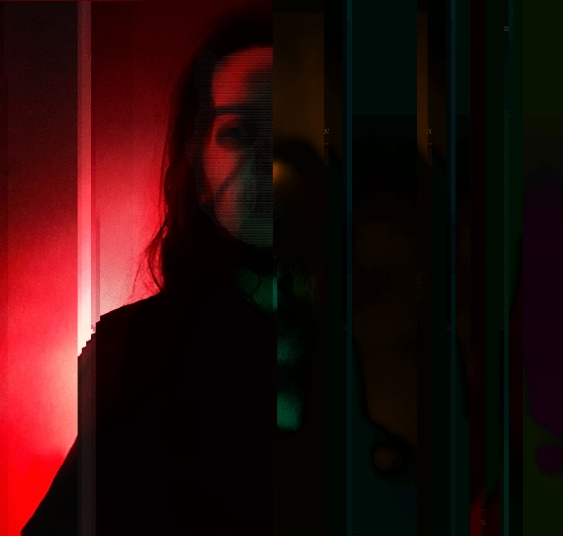

Bio
Digital Coffin es un artista audiovisual argentino con una inclinación por el terror, lo gótico y las estéticas underground. Estudió Traductorado Público en Inglés y Filosofía; también ha completado cursos de Diseño Gráfico en 2012, Subtitulado en 2015 y Diseño 3D en Blender en 2022. Actualmente, estudia Ilustración Anatómica y Desarrollo Front End mientras trabaja en su proyecto artístico "Digital Coffin", donde realiza animaciones pixel art, vector art y 3D con temáticas relacionadas con el terror. Antes de iniciar su proyecto artístico, trabajó como subtitulador, animador pixel y diseñador gráfico.